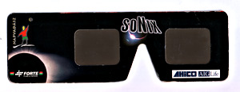
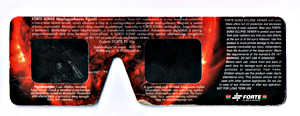

Teljes napfogyatkozás 1999. Magyarország
A totalitás fázisát kivéve szűrőfólia nélkül ne nézz a napba, pláne ne távcsővel!
Ez az oldal nem lesz túl hosszú és részletes, a többi napfogyatkozás oldalamon ( 2006. 2009. 2016. ) sokkal több információt találsz.
1999. agusztus 11-én volt Magyarországon utoljára teljes napfogyatkozás, több millió emberhez hasonlóan nekem is ez volt az első amit láttam. A totalitás sávja Xavier M. Jubier nagyszerű google térképén ellenőrizhető, látszik hogy kb. Szombathely - Szeged volt a középvonal ahol 2 perc 22 másodperc volt a totalitás. Én Zalaegerszegről néztem, ahol már lényegesen rövidebb, 1 perc 38 másodperc volt csak.
Elegánsan azt is írhatnám, hogy a vizuális megfigyelésre összpontosítottunk. A valóságban ez azt jelenti, hogy nem igazán tudtam azt, hogy hogyan kell napfogyatkozást fényképezni, és felszerelésem sem volt hozzá.
Ez a napfogyatkozás a 145. Száros-ciklus tagja, melynek a következő fogyatkozása a 2017-es USA napfogyatkozás lesz, ahhoz közeledve erről gondolom majd egyre többet olvashatunk.
Részleges fázis
Ezeket a szemüvegeket használtuk a megfigyelésre. Még mindig megvannak, persze közel 20 évvel később már nem merném használni ezeket
 {kind=link}
{kind=link}
A filmtekercset megnézve úgy tűnik egyetlen egy képet sem készítettem a részleges fázisról. A szemüveg persze valóban kicsi lett volna szűrőnek, de volt nálunk hegesztő védőüveg is amit akár használhattam volna.
Totalitás
A totalitás alatt fényképeztem. A felszerelés:
- Állvány ( valami imbolygó Hama )
- Pentax MZ-5
- SMC Pentax-F 1:4-5.6 35-80mm kitobjektív
- Kodak Gold 400-as film
{kind=link}
{kind=link}
{kind=link}
{kind=link}
Látszik, hogy a Nap becsillog, leginkább gondolom azért, mert a kitobjektívvel nem szerencsés nappal szemben fényképezni ( itt azért nehéz ezt elkerülni ). Az elrontott képek egy részén a Nap be is mozdul, valószínűleg többféle expozíciós idővel is készítettem képeket.
Mi lehetett a fókusztávolság? Nyilván nem emlékszem már rá, és nem is írtam fel ( vagy felírtam és elveszítettem ). A géphez adott alapobjektívet (35-80 mm) használtam, az biztos. A beszkennelt képeken kb 30 pixel a Nap mérete. Mivel 300dpi-vel szkenneltem ez 0.1 hüvelyk. 13x18 cm-es képet szkenneltem vagyis 5x7 hüvelykest. Vagyis a rövidebb oldal 1/50-ed része a Nap ( a képarány miatt szerencsésebb a rövidebb oldalból számolni, a hosszabb oldalból valószínűleg vágtak a nagyításnál ). A negatív mérete 24x36mm, vagyis a rövidebb oldal 1/50-ed része az kb. 0.5 mm. A Nap képe a negatívon a fókusztávolság 1/109-ed része, vagyis kb. 55mm-es fókusztávolsággal fényképezhettem. ( Azért megnyugtató, hogy 35 és 80 mm közötti szám jött ki. )